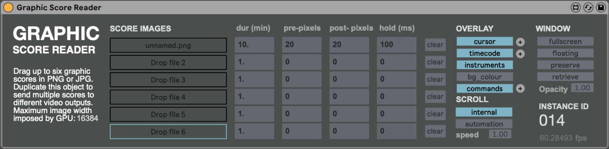

Developed by Le Laboratoire formes•ondes (LFO), GSR is a macOS Max for Live device for real-time scrolling of graphical score files, allowing score playback to be combined with the audio and MIDI features of Ableton Live.
Role
Under the direction of Nicolas Bernier, I built Graphic Score Reader to facilitate the live performance of musical works by the Ensemble d'oscillateurs at the Université de Montréal. The system allows transport-synchronized playback of scores, distinct visual outputs for audience and performers, and sequencing of multiple scores into a concert-length program.
Tools
Max, GLSL
Credits
Direction
Nicolas Bernier
Programming
Evan Montpellier
Video by Nicolas Bernier